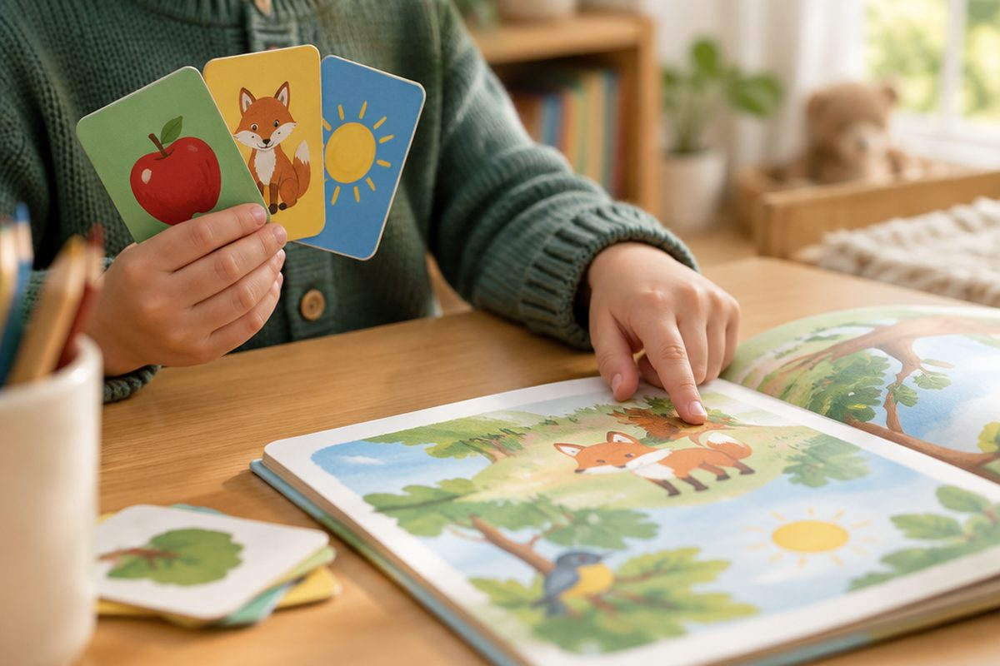

전체 단원 › 1~2학년 › 국어 › 3단계 · 문장 부호 . ? !
마침표, 물음표, 느낌표는 언제 쓸까?

문장 끝에는 작은 표시가 붙어요. 표시에 따라 읽는 느낌이 달라져요.
마침표( . )
무엇을 알려 주는 문장 끝에 써요.
끝을 살짝 내려 읽어요.
나는 여덟 살이에요.
물음표( ? )
묻는 문장 끝에 써요.
끝을 올려 읽어요.
밥 먹었니?
느낌표( ! )
놀라거나 기쁜 마음일 때 써요.
느낌을 살려 힘 있게 읽어요.
와, 무지개다!
부호가 바뀌면 뜻도 바뀌어요
같은 말도 부호에 따라 달라요.
'밥 먹어요.'는 알려 주는 말이에요.
'밥 먹어요?'는 묻는 말이에요.
밥 먹어요. / 밥 먹어요? / 밥 먹어요!
핵심 낱말
- 문장 부호
- 문장에 쓰는 여러 가지 표시
- 마침표
- 알려 주는 문장 끝에 쓰는 .
- 물음표
- 묻는 문장 끝에 쓰는 ?
- 느낌표
- 놀람이나 기쁨 같은 느낌을 나타낼 때 쓰는 !
꼭 알아야 할 표현
| 마침표 | 알려 주는 문장 끝에 쓰는 . | |
| 물음표 | 묻는 문장 끝에 쓰는 ? | [무름표] |
| 느낌표 | 느낌을 나타내는 ! | |
| 나는 여덟 살이에요. | 마침표 문장: 알려 주는 말 | [나는 여덜 사리에요] 끝을 내려 읽어요 |
| 오늘은 월요일이에요. | 마침표 문장: 알려 주는 말 | [오느른 워료이리에요] 끝을 내려 읽어요 |
| 이름이 뭐예요? | 물음표 문장: 묻는 말 | [이르미 뭐예요] 끝을 올려 읽어요 |
| 어디 가니? | 물음표 문장: 묻는 말 | 끝을 올려 읽어요 |
| 와, 무지개다! | 🌈 느낌표 문장: 놀라고 기쁜 말 | 힘 있게 읽어요 |
| 우아, 정말 멋지다! | 느낌표 문장: 감탄하는 말 | [우아, 정말 먿찌다] |
| 밥 먹어요. | 🍚 알려 주는 말 | [밤 머거요] 끝을 내려 읽어요 |
| 밥 먹어요? | 🍚 묻는 말 | [밤 머거요] 끝을 올려 읽어요 |
한 줄 정리
- 알려 주는 문장 끝에는 마침표(.)를 써요.
- 묻는 문장 끝에는 물음표(?)를 쓰고 끝을 올려 읽어요.
- 놀라거나 기쁜 느낌에는 느낌표(!)를 써요.
학교 교육과정 연결
- [2국04-03] 문장과 문장 부호를 알맞게 쓰고 한글에 호기심을 가진다.